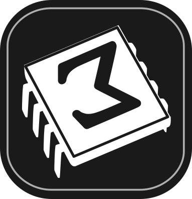

 |
This is a personal blog about myself and a place where I can write about the things that I find interesting. For the note base of this blog, I shall primarily be using TeXmacs, and this blog is motivated by the blog format developed at TeXmacs Notes.
The list of all the articles on this website can be found here, also available as Atom feed.
These articles contain collections of stuff, additions are welcome.
Some documents created with TeXmacs
Some development resources and ideas
Wishlist and additional functionalities
Self-contained, one shot, material on various topics. Roughly, most recent articles on top.
TeXmacs and the art of mathematical writing
The Macro Editor and Easy Macro Modification
Compiling TeXmacs on the Raspberry Pi
Customizing the color of code snippets
Embedding graphics composed with Scheme into documents
Composing TeXmacs graphics with Scheme
An overview of TeXmacs from altitude
A TikZ example with the
Embedding TikZ figures in a document
Build TeXmacs using CMake and MXE on WSL for Windows
Build TeXmacs using CMake and Homebrew on macOS
Adding a dialog to build websites
Implementing previews for link targets
Make a pull request to the source repository. Typically it
should just be necessary to modify or add to only the .tm
sources in the src/ directory and modify accordingly
main.tm (this document). This template file can
be used for new articles. The HTML files are then generated by one of
the maintainers after the pull request is merged (hopefully this will be
automated in the near future). Once the changes are pulled in they will
become immediately publicly visible on the website. Detailed
instructions are available here.